Creative
Every synthesizer node in Infinite: the complete sound design guide
The complete guide to all 20 synthesizer nodes in Infinite: subtractive, wavetable, FM, physical modeling, granular, spectral resynthesis, and DSP kernels.
on this page
- 1. Oscillator: dual-oscillator subtractive & FM engine
- 2. Wavetable: 64-table morphing synth with unison
- 3. Analog: polyphonic virtual analog with nonlinear filters
- 4. FM: 4-operator frequency modulation synthesizer
- 5. Partials: 64-harmonic additive formant resynthesis
- 6. String: Karplus-Strong physical modeling waveguide
- 7. Wave Terrain: topographic image-to-sound synthesis
- 8. Equation Synth: Desmos-style mathematical synthesis
- 9. Spectral Synth: real-time spectrogram resynthesis
- 10. Metallic: modal physical resonator for bells and plates
- 11. Sampler: polyphonic multisample engine
- 12. Slicer: transient-detecting beat chopper
- 13. PaulStretch: extreme spectral time-stretching
- 14. Molder: harmonic partial decomposition and waveshaping
- 15. Grain Molder: granular feature sorting and risers
- 16. Granular: real-time polyphonic granular cloud engine
- 17. Field Synth: programmable per-sample JIT DSP kernel
- 18. Drum Sequencer: 16-step polyphonic drum engine
- 19. MPC: 16-pad vintage sampling groovebox
- 20. Looper: multi-layer live performance phrase looper
- Synthesis on a unified graph
Most digital audio workstations isolate sound generation inside third-party plugins. You purchase an instrument, load a floating window, navigate vendor-specific preset systems, and route stereo audio into a rigid mixer channel.
Infinite approaches synthesis from a different foundation. Every synthesizer lives directly on the open canvas as a modular node. Notes, audio streams, modulation voltages, and visual textures share the same graph and memory space. A single LFO can sweep a wavetable position while warping a 3D geometry mesh, and a reaction-diffusion simulation can directly generate polyphonic audio timbre.
Infinite features twenty native synthesizer engines, spanning virtual analog, morphing wavetables, 4-operator frequency modulation, Karplus-Strong waveguides, granular cloud generators, extreme spectral time-stretchers, and per-sample programmable JIT kernels.
Here is an architectural breakdown of every synthesizer node in Infinite, how their sound engines work, and how to patch them.
1. Oscillator: dual-oscillator subtractive & FM engine
The Oscillator node is Infinite's foundational sound generator, built upon bandlimited anti-aliased wavetables with linear frequency modulation and phase synchronization.
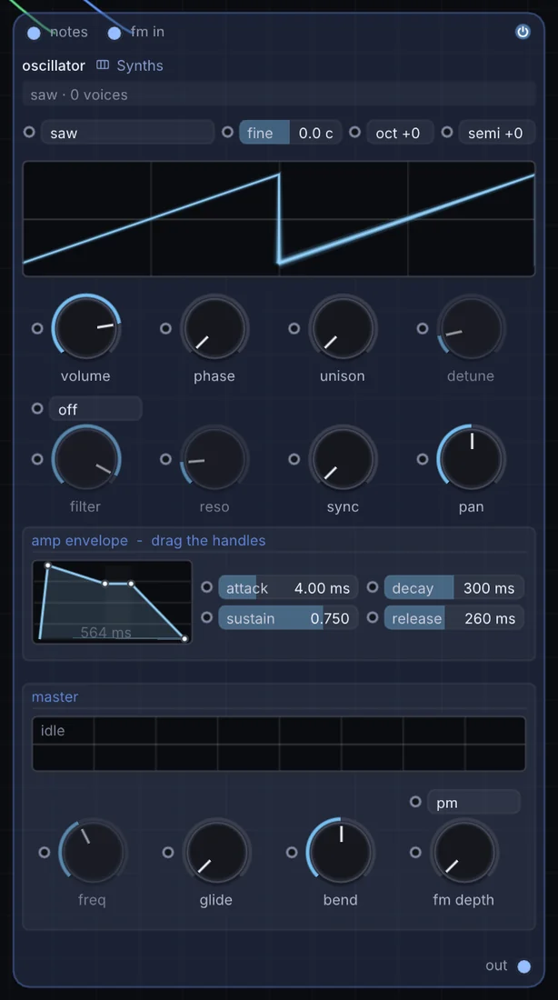
How it works
- Waveforms: Sine, Triangle, Sawtooth, and Square with variable Pulse Width (
0.01to0.99). - Pitch controls: Coarse frequency (
20 Hzto8000 Hz), octave shift (-4to+4), semitone offset (-12to+12), and fine detune (-50to+50cents). - Linear FM input: An audio-rate
fm_inpin enables modulation from a secondary oscillator, producing rich sidebands for metallic chimes, FM brass, and aggressive growls. - Portamento: Continuous glide parameter (
0to2seconds) providing constant-rate pitch transitions between notes.
Try it
Patch a secondary Oscillator set to a high octave into the fm_in port, modulate FM Depth with an Envelope, and route through an Audio Filter for crisp metallic bells.
Random Note Generator -> Oscillator -> Audio Filter -> Audio Out2. Wavetable: 64-table morphing synth with unison
The Wavetable node is Infinite's flagship polyphonic wavetable instrument, featuring 64 factory wavetables that morph smoothly across eight distinct single-cycle frames.
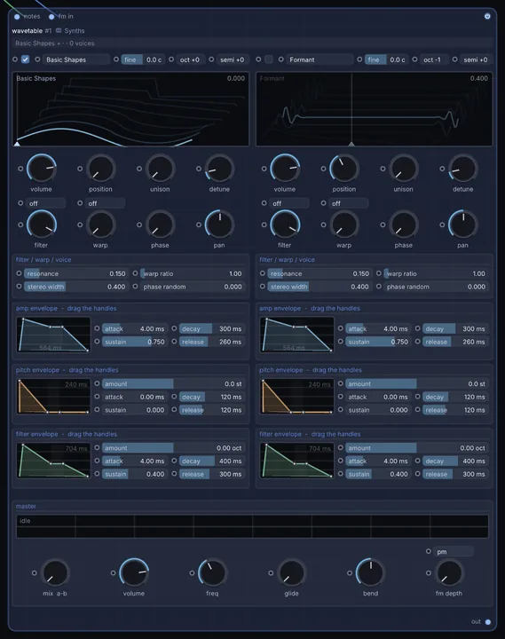
How it works
- 2D table scanning: Continuous position interpolation across 8 frames per table, eliminating step clicks or boundary artifacts.
- Unison detune & stereo spread: Stacks up to 8 voices per note with adjustable frequency detuning and wide stereo placement.
- Sub-oscillator: Integrated sub-harmonic generator providing dedicated low-end weight independently of table morphing.
- Modulatable position: The position parameter can be cabled directly to LFOs, envelope followers, or hand tracking modulators.
Try it
Wire an LFO into the table position input so the waveform continually evolves, then layer chorus for a lush cinematic pad.
Arpeggiator -> Wavetable -> Chorus -> Reverb -> Audio Out3. Analog: polyphonic virtual analog with nonlinear filters
The Analog node models the physical circuit behaviour of vintage analog synthesizers, complete with subtle oscillator drift, saturation stages, and four distinct nonlinear filter topologies.
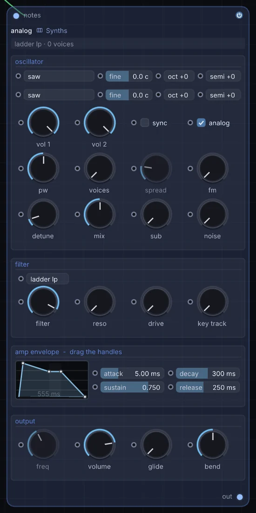
How it works
- Twin drift-stabilized oscillators: Dual oscillators with saw, square, triangle, and sine options, pulse width modulation, sub-oscillator, and a pink/white noise source.
- Circuit-modeled filters: Switchable between a 4-pole Moog transistor ladder, Korg MS-20 resonant lowpass, diode ladder, and state-variable filter (SVF).
- 4x oversampling: Drives and non-linear filter stages run at 4x internal oversampling to keep aliasing strictly under -80 dB across all octaves.
- Dual ADSR envelopes: Dedicated amplitude and filter envelopes with exponential decay curves.
Try it
Stack three detuned unison voices, select the MS-20 filter model with medium resonance, and sweep cutoff with an envelope for an authentic acid bassline.
MIDI Notes -> Analog -> Delay -> Audio Out4. FM: 4-operator frequency modulation synthesizer
The FM node delivers classic frequency modulation synthesis using four sine operators configured across eleven classic routing algorithms.
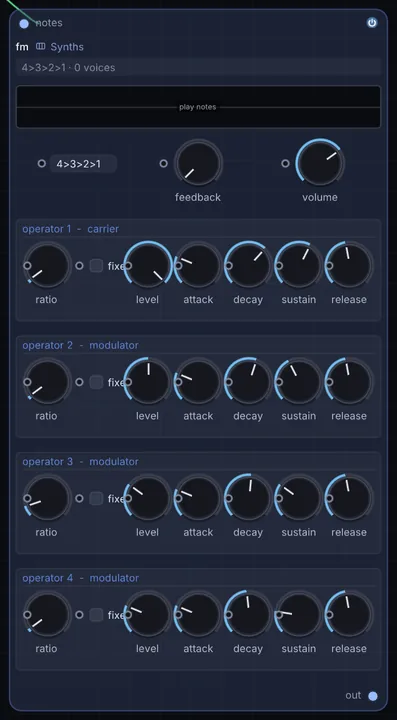
How it works
- 11 routing algorithms: Ranging from a pure vertical cascade (
4 -> 3 -> 2 -> 1) for complex harmonic teeth, to parallel carriers for additive electric pianos. - Harmonic frequency ratios: Per-operator integer and fractional frequency multipliers (
0.5xto32x). - Feedback loop: Operator 4 includes self-modulation feedback, transitioning from smooth sines to saw waves and broadband noise.
- Per-operator envelopes: Individual envelope generators shaping the modulation index over time.
Try it
Select algorithm 5 (two parallel carrier-modulator stacks), tune operator 2 to a 3.5x non-harmonic ratio, and add a brief decay envelope for a crystalline mallet sound.
Arpeggiator -> FM -> Reverb -> Audio Out5. Partials: 64-harmonic additive formant resynthesis
The Partials node performs real-time additive resynthesis, tracking harmonic partials and reproducing acoustic instruments and voices without pitch artifacts.
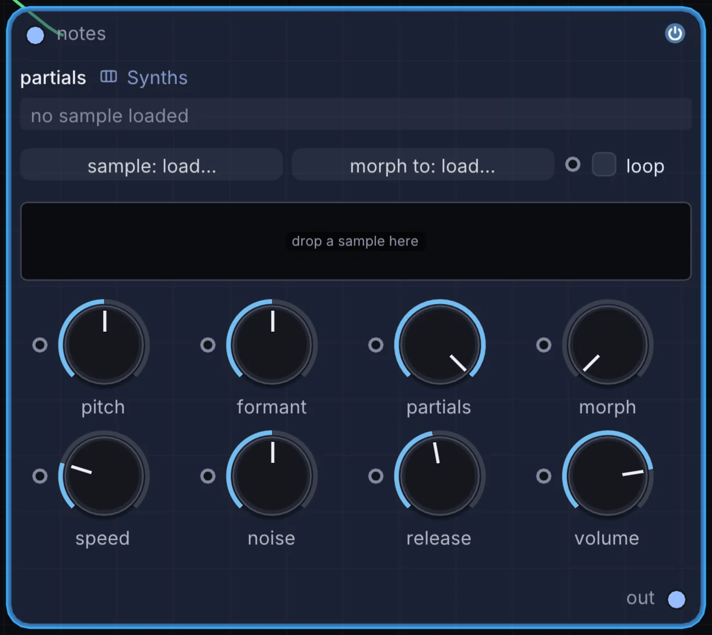
How it works
- Formant preservation: When transposing incoming audio across octaves, Partials keeps the spectral formant envelope locked in place, avoiding the unnatural "chipmunk" timbre common to conventional samplers.
- Spectral tilt & odd/even balance: Continuous control over harmonic roll-off slope and the ratio between even and odd harmonics.
- Inharmonic stretching: Stretches partial frequencies away from integer multiples for bell and metallic timbres.
- Residual noise tracking: Models the turbulent air and breath left behind by harmonic analysis.
Try it
Load a vocal syllable or acoustic cello sample into Partials, trigger it across three octaves, and hear natural vocal character preserved across the entire keyboard.
MIDI Notes -> Partials -> Convolution Reverb -> Audio Out6. String: Karplus-Strong physical modeling waveguide
The String node models the physical acoustics of vibrating strings stretched over a resonating wooden body using Karplus-Strong waveguide synthesis.
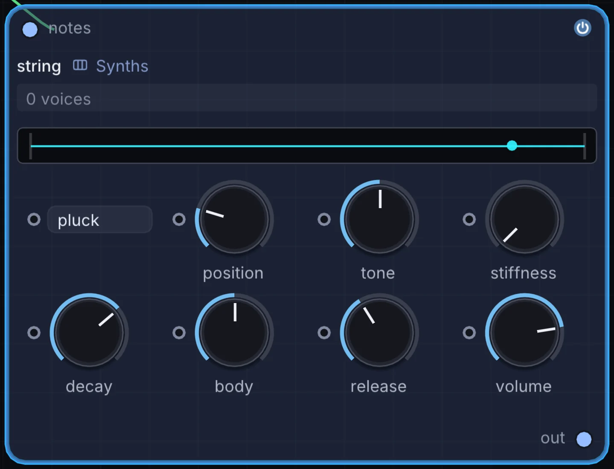
How it works
- Physical waveguide loop: A delay line length tuned exactly to the note's fundamental frequency, coupled with an internal lowpass reflection filter.
- Three exciter modes:
- Pluck: Impulse burst simulating a guitar plectrum or finger pick.
- Bow: Continuous friction noise simulating a violin or cello bow.
- Strike: Felt hammer excitation simulating an acoustic piano or hammered dulcimer.
- Body resonance & pickup position: Configurable acoustic body model and spatial pickup location along the string length.
Try it
Set the exciter mode to Bow, slow the attack time slightly, and play sustained chords for a lush acoustic string ensemble.
Chorder -> String -> Reverb -> Audio Out7. Wave Terrain: topographic image-to-sound synthesis
The Wave Terrain node turns any 2D image, video capture, reaction-diffusion simulation, or procedural texture into a continuous 3D acoustic terrain surface z = T(u, v).
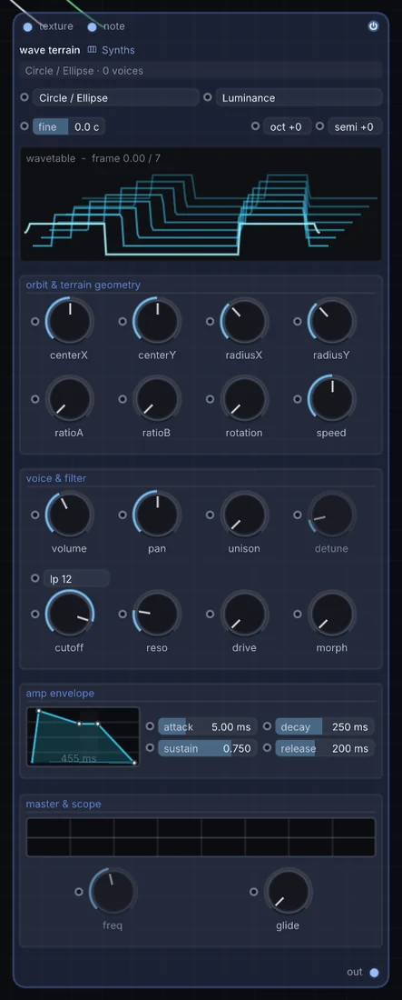
How it works
- Audio-rate orbital paths: An oscillator traces a closed orbital trajectory
(u(t), v(t))across the image (circle, ellipse, Lissajous curve, or lemniscate). - Surface height as amplitude: As the orbital scan travels across pixels, the image luminance
zbecomes the instantaneous audio amplitude. - 10-level Fourier MIP antialiasing: Sampling raw image pixels causes harsh aliasing; Infinite computes an internal Real Discrete Fourier Transform (RDFT) MIP pyramid across 10 octaves, ensuring pristine, alias-free polyphonic synthesis across all 8 octaves.
Try it
Feed a live Reaction Diffusion texture into Wave Terrain, route an LFO to orbit radius, and listen to the sound morph as the organic visual pattern blooms.
Reaction Diffusion -> Wave Terrain -> Saturator -> Audio Out8. Equation Synth: Desmos-style mathematical synthesis
The Equation Synth node evaluates custom mathematical expressions y = f(x, a, b, c, d) directly at 48kHz audio rates, turning formulas into playable instruments.
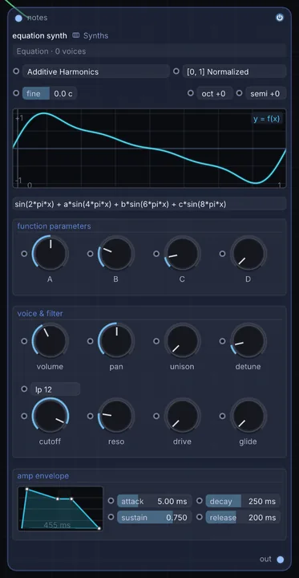
How it works
- Inline formula parsing: Type formulas directly using standard mathematical functions (
sin,cos,tan,pow,abs,tanh,floor). - Real-time parameter knobs: Four continuous parameters (
knobA,knobB,knobC,knobD) exposed as modulation pins. - Compile-time bandlimiting: Evaluated curves are compiled into bandlimited wavetable mipmaps, preventing mathematical sharp edges from creating audible foldback distortion.
Try it
Type sin(x) + a * sin(x * 3) + b * sin(x * 5), wire an LFO to knobA, and listen to third and fifth harmonics fade in and out with algebraic purity.
MIDI Notes -> Equation Synth -> Formant Filter -> Audio Out9. Spectral Synth: real-time spectrogram resynthesis
The Spectral Synth node scans an image or visual canvas horizontally as a spectrogram, converting visual pixels into audible frequencies.
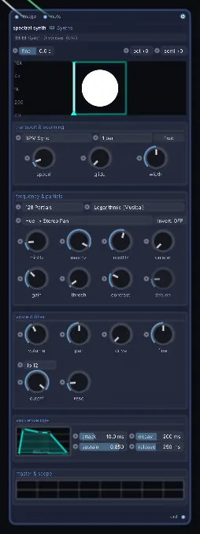
How it works
- Horizontal scan line: A playhead travels across the texture from left to right at tempo-synced rates.
- Vertical frequency mapping: The vertical $y$-axis maps to acoustic frequency (low frequencies at the bottom, high frequencies at the top), while pixel brightness sets partial amplitude.
- Spectral freeze: Freeze the playhead at any point along the image to produce an indefinite, unmoving spectral chord.
Try it
Draw three horizontal brush strokes in a Draw node at low, mid, and high positions, patch the texture into Spectral Synth, and hear your sketch played back as a triad.
Draw Canvas -> Spectral Synth -> Delay -> Audio Out10. Metallic: modal physical resonator for bells and plates
The Metallic node models the physical vibrations of acoustic metal and glass objects struck by hard or soft mallets using a bank of coupled two-pole bandpass resonators.
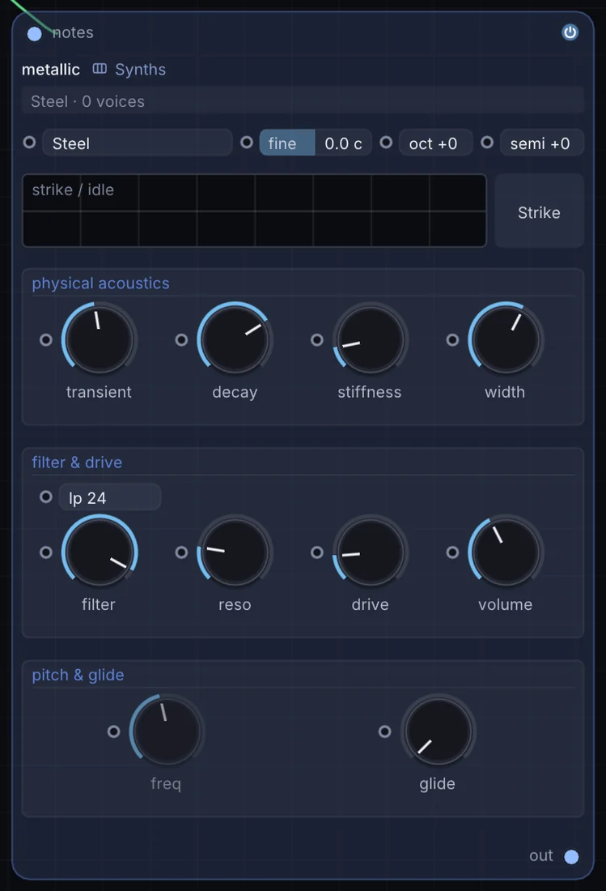
How it works
- 8 material presets: Steel, Brass, Bell Bronze, Aluminium, Glass, Wood, Ceramic, and Titanium.
- Modal dispersion: Modes follow non-integer frequency ratios corresponding to the physical vibration equations of circular plates and rectangular bars.
- Stiffness & decay: Stiffness controls modal frequency clustering, while decay adjusts the acoustic damping rate across high versus low modes.
- Strike hardness: Blends from a soft felt mallet impulse to a sharp metal point impact.
Try it
Trigger Metallic from the Bouncing Balls note generator for an acoustic gamelan performance where notes ring and decay naturally in space.
Bouncing Balls -> Metallic -> Reverb -> Audio Out11. Sampler: polyphonic multisample engine
The Sampler node provides polyphonic sample playback with precision loop boundaries, pitch tracking, and real-time live audio recording.
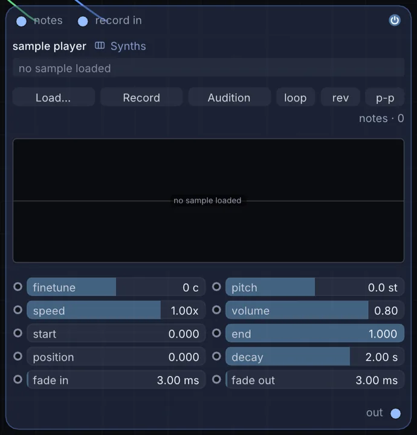
How it works
- Playback modes: One-Shot, Forward Loop, Reverse Loop, and Ping-Pong bidirectional loop.
- Live buffer recording: An audio
record_inport allows capturing incoming microphone feeds, guitar inputs, or synth stems straight into memory. - Root pitch tracking: Tracks MIDI keyboard pitch relative to a configurable base key with crossfade loop smoothing.
- Envelope shaping: Built-in ADSR envelope for smooth sample transitions.
Try it
Record an ambient field recording through record_in, set the loop mode to Ping-Pong with a 100ms crossfade, and play rich chords across the keyboard.
Microphone -> Sampler (Record In) -> MIDI Notes -> Sampler -> Audio Out12. Slicer: transient-detecting beat chopper
The Slicer node analyzes incoming audio loops, detects transient attacks, and slices the recording into individual hits mapped across MIDI notes.
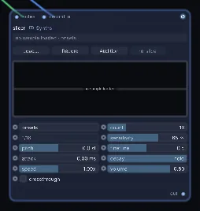
How it works
- Onset detection: High-precision transient peak detection algorithm automatically finding drum hits and percussive transients.
- Metric grid fallback: Option to slice by strict musical divisions (1/8, 1/16, or 1/32 notes) locked to transport BPM.
- Per-slice control: Individual start/end offsets, pitch offsets, and reverse triggers per slice.
- MIDI pad mapping: Slices automatically map upward from MIDI note C1 for instant pad controller performance.
Try it
Feed a drum break into Slicer, connect an Arpeggiator with a random pattern, and generate an endless supply of breakbeat permutations.
Drum Loop -> Slicer -> Arpeggiator -> Slicer -> Audio Out13. PaulStretch: extreme spectral time-stretching
The PaulStretch node implements the legendary Paul Nasca spectral time-stretch algorithm, expanding audio recordings from 10x to 1000x their original length without pitch shifts.
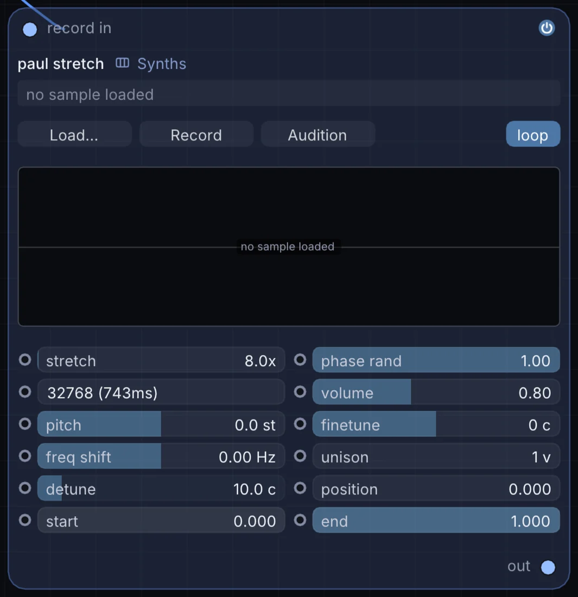
How it works
- Windowed FFT analysis: Deconstructs incoming audio into heavily overlapping spectral windows (typically 0.25 to 2.0 seconds wide).
- Phase randomization: Completely randomizes the phase angle of every frequency bin while preserving original magnitude, eliminating comb filtering and phase cancellation.
- Extreme stretch factors: Stretches a 3-second vocal sample into a 5-minute ambient drone that retains acoustic warmth.
- Unison & detune: Adds multi-voice spectral unison for shimmering cinematic textures.
Try it
Load a short acoustic piano chord into PaulStretch, set Stretch to 50x, open the FFT window to 1.5 seconds, and send the result into a Limiter for an ambient soundscape.
Piano Sample -> PaulStretch (50x) -> Limiter -> Audio Out14. Molder: harmonic partial decomposition and waveshaping
The Molder node decomposes incoming audio into tracked sinusoidal partials and residual noise, then applies nonlinear wavefolding and dynamic mutation curves.
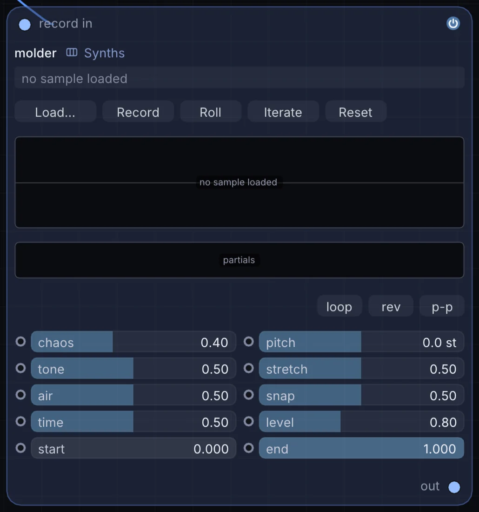
How it works
- Sinusoidal tracking: Extracts frequency tracks and energy envelopes from any incoming sample.
- Mutation roll: The Roll button mutates frequency tracks, introducing harmonic permutations and metallic shifts.
- Nonlinear folding: Compresses partial amplitudes through polynomial folding curves, producing grit and analog saturation.
Try it
Send a clean acoustic vocal recording into Molder, trigger the Roll parameter via a macro button, and listen to the voice transform into alien harmonic drones.
Sampler -> Molder -> Chorus -> Audio Out15. Grain Molder: granular feature sorting and risers
The Grain Molder node chops an audio buffer into thousands of overlapping micro-grains, analyzes their acoustic properties (loudness, spectral centroid, or pitch), and sorts them in ascending or descending order.
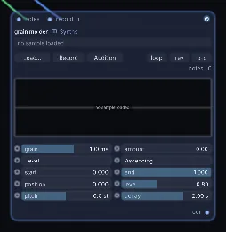
How it works
- Micro-grain slicing: Deconstructs buffers into grains between 20ms and 150ms with Hann window envelopes.
- Acoustic feature classification: Measures root-mean-square (RMS) energy, brightness, and pitch density for every grain.
- Sorting engine: Reorders grains along the playback timeline according to the chosen metric.
- Amount slider: Morphs continuously from original chronological playback to fully sorted granular order.
Try it
Load a busy drum break, set Sort Mode to Level, and automate the Amount slider from 0% to 100% over four bars to produce a natural granular riser.
Drum Loop -> Grain Molder (Amount) -> Audio Filter -> Audio Out16. Granular: real-time polyphonic granular cloud engine
The Granular node shreds recorded or live audio into micro-sound grains (10ms to 500ms), scattering them across space and time to produce granular clouds, textures, and pitch-shifted shimmers.
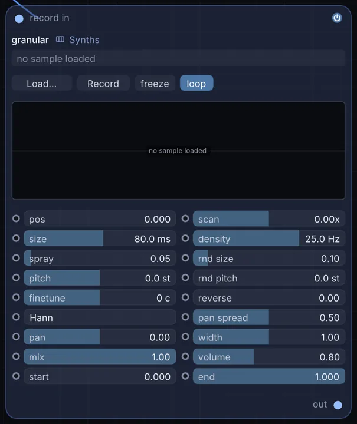
How it works
- Grain density & size: Generates up to 64 simultaneous overlapping grains with customizable duration and emission rate.
- Position scrub & spray: Controls the center read head position in the buffer, while Spray introduces random time offsets.
- Pitch randomization: Randomly scatters grain playback speeds across customizable semitone windows.
- Freeze toggle: Instantly locks the read head to sample an infinitesimal sliver of sound indefinitely.
Try it
Pipe a live guitar input into Granular, hit Freeze during a sustained chord, and widen Pitch Spray to turn a single strum into an ethereal cloud of sound.
Audio In -> Granular (Freeze) -> Stereo Delay -> Audio Out17. Field Synth: programmable per-sample JIT DSP kernel
The Field Synth node is Infinite's most flexible sound engine: a polyphonic synthesizer whose entire voice algorithm is written in Infinite's bare-name Field language and compiled directly into native machine code.
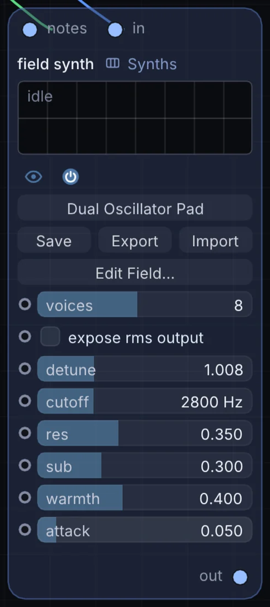
How it works
- Bare-name syntax: Write DSP code with plain algebraic expressions (
freq,phase,out) without sigils or boilerplate. - Per-sample execution: Runs on the audio thread at 48kHz with zero garbage collection or allocation overhead.
- Dynamic user knobs: Define custom parameters in code that automatically expose modulatable pins on the node body.
- Polyphonic voice architecture: The engine handles note allocation, voice stealing, and per-voice registers automatically.
Example: resonant dual-oscillator kernel
// inputs: f (frequency), t (time), gate (0..1)
state p1 = 0.0
state p2 = 0.0
// phase accumulators
let inc = f * (6.2831853 / 48000.0)
p1 = p1 + inc
if p1 > 6.2831853 { p1 = p1 - 6.2831853 }
p2 = p2 + inc * 1.005 // slight detune
if p2 > 6.2831853 { p2 = p2 - 6.2831853 }
// soft-clipped sum
let raw = sin(p1) * 0.5 + sin(p2) * 0.5
out = tanh(raw * 1.5) * gateTry it
Drop a Field Synth, paste the kernel above, connect MIDI Notes, and immediately enjoy a clean, detuned analog lead with zero external dependencies.
MIDI Notes -> Field Synth -> Limiter -> Audio Out18. Drum Sequencer: 16-step polyphonic drum engine
The Drum Sequencer node is an integrated 8-track, 16-step drum machine combining analog drum synthesis circuits with an intuitive pattern grid.
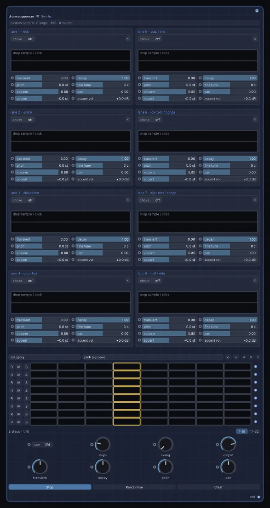
How it works
- 8 synthesized drum voices: Dedicated circuits for Kick, Snare, Closed Hat, Open Hat, Clap, Low Tom, High Tom, and Percussion.
- Individual audio outputs: Includes a master stereo mix output plus eight individual audio outs (
1to8) for per-channel external processing and mixing. - Step velocity & swing: Per-step velocity sliders with configurable shuffle percentage.
- Transport lock: Automatically locks to Infinite's global BPM and timeline transport.
Try it
Wire individual output 1 (Kick) to an Audio Analyze node, and use its bass energy output to drive the scale of a 3D Sphere in sync with the beat.
Drum Sequencer (Kick Out) -> Audio Analyze -> 3D Sphere (Scale)19. MPC: 16-pad vintage sampling groovebox
The MPC node captures the tactile immediacy and groove feel of classic 16-pad hardware samplers.
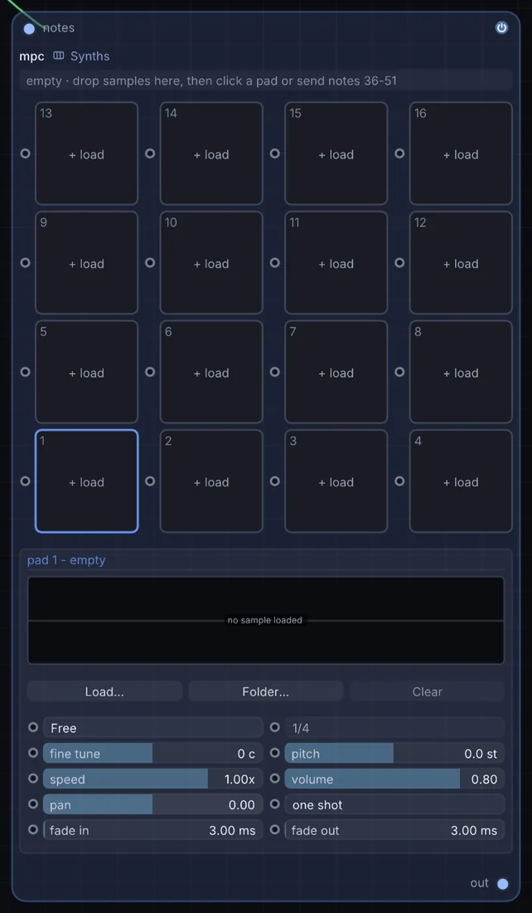
How it works
- 16 dynamic sample pads: Drag and drop audio files onto any of the 16 pads.
- 16-level velocity mode: Spreads either volume or pitch across all 16 pads for expressive melodic playing of a single sample.
- Note repeat: Hold a pad while pressing Note Repeat to generate rhythmic rolls quantized to 1/8, 1/16, or 1/32 triplets.
- Choke groups: Assign pads to mutually exclusive mute groups (such as open and closed hi-hats).
Try it
Load a vocal chop onto pad 1, turn on 16-Level Tuning, and play pitched vocal melodies straight from a MIDI keyboard or pad controller.
MIDI Notes -> MPC -> Saturator -> Audio Out20. Looper: multi-layer live performance phrase looper
The Looper node is designed for live improvisation, enabling bar-quantized audio phrase recording, seamless overdubbing, and speed manipulation.
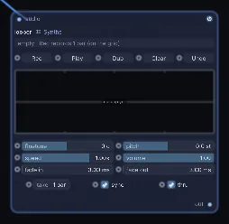
How it works
- Bar-quantized punch-in: Automatically rounds start and stop commands to the nearest bar boundary (1, 2, 4, 8, or 16 bars).
- Non-destructive overdubbing: Layer takes indefinitely with an adjustable decay feedback control to prevent buildup.
- Reverse & half-speed: Instant reverse toggle and half-speed playback for tape-style pitch drop effects.
- Boundary crossfades: Applies 5ms micro-crossfades across loop seams, eliminating clicks on imperfect takes.
Try it
Record a 2-bar guitar or vocal loop, hit Dub to add counter-melodies, and toggle Reverse for an immediate backwards psychedelic texture.
Audio In -> Looper -> Stereo Delay -> Audio OutSynthesis on a unified graph
Because Infinite shares a single execution graph across audio, 2D compositing, and 3D geometry, these twenty synthesizers are not confined to traditional DAW audio tracks.
You can drive a Wavetable position from a particle system's average kinetic energy, strike a Metallic resonator whenever a 3D bouncing sphere collides with a floor plane, or scan a generative reaction-diffusion texture through Wave Terrain at 48kHz.
Drop any synthesizer onto the canvas, wire it up, and explore sound design unconstrained by plugin windows.